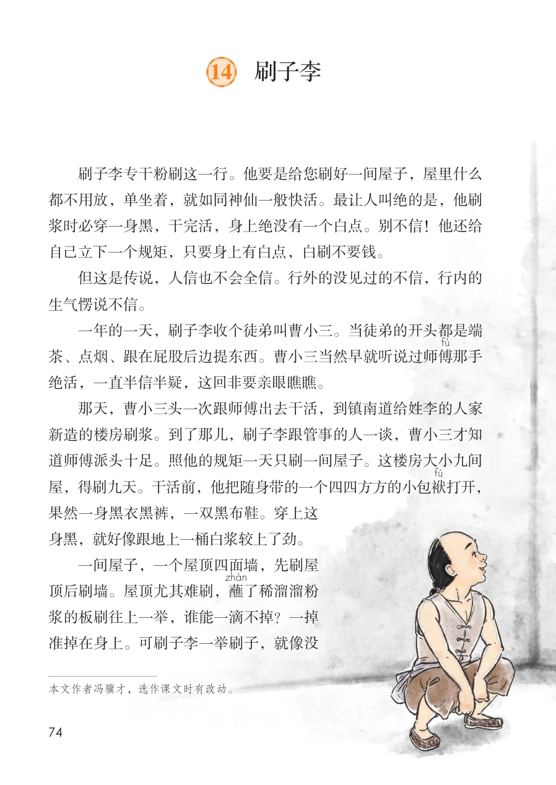
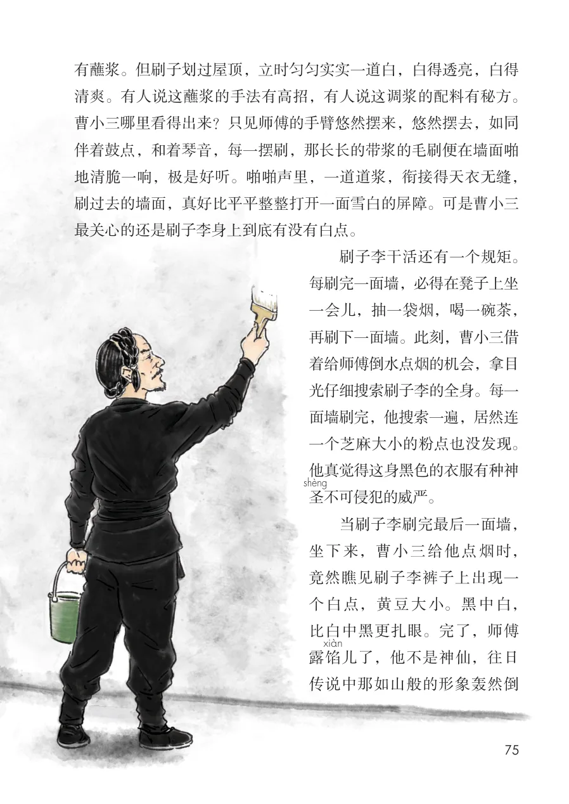
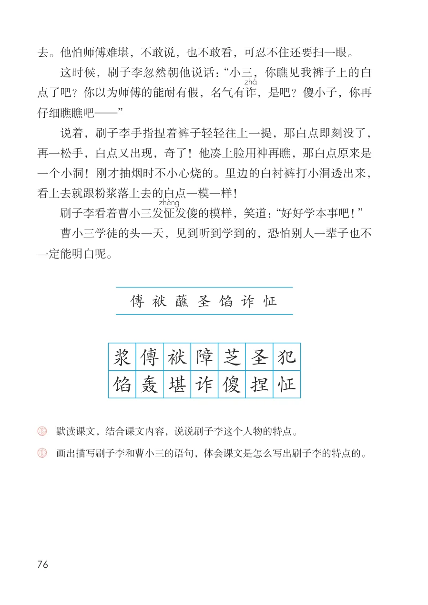
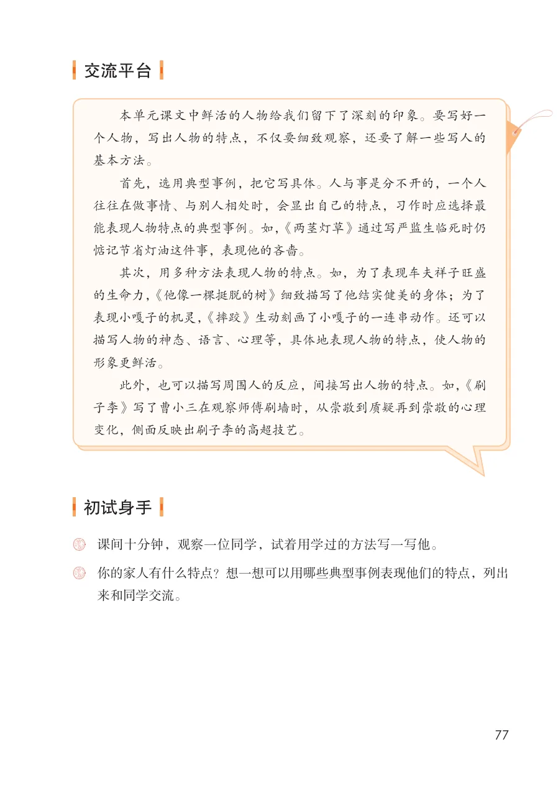

展开章节菜单
14 刷子李
刷子李专干粉刷这一行。他要是给您刷好一间屋子，屋里什么
都不用放，单坐着，就如同神仙一般快活。最让人叫绝的是，他刷浆时必穿一身黑，干完活，身上绝没有一个白点。别不信！他还给自己立下一个规矩，只要身上有白点，白刷不要钱。
但这是传说，人信也不会全信。行外的没见过的不信，行内的生气愣说不信。
一年的一天，刷子李收个徒弟叫曹小三。当徒弟的开头都是端茶、点烟、跟在屁股后边提东西。曹小三当然早就听说过师傅绝活，一直半信半疑，这回非要亲眼瞧瞧。
那天，曹小三头一次跟师傅出去干活，到镇南道给姓李的人家新造的楼房刷浆。到了那儿，刷子李跟管事的人一谈，曹小三才知道师傅派头十足。照他的规矩一天只刷一间屋子。这楼房大小九间屋，得刷九天。干活前，他把随身带的一个四四方方的小包袱
打开，果然一身黑衣黑裤，一双黑布鞋。穿上这身黑，就好像跟地上一桶白浆较上了劲。
一间屋子，一个屋顶四面墙，先刷屋顶后刷墙。屋顶尤其难刷，蘸浆的板刷往上一举，谁能一滴不掉？一掉准掉在身上。可刷子李一举刷子，就像没
查看教材原页（保留全部图片、注音与原始排版）

有蘸浆。但刷子划过屋顶，立时匀匀实实一道白，白得透亮，白得
清爽。有人说这蘸浆的手法有高招，有人说这调浆的配料有秘方。
曹小三哪里看得出来？只见师傅的手臂悠然摆来，悠然摆去，如同
伴着鼓点，和着琴音，每一摆刷，那长长的带浆的毛刷便在墙面啪
地清脆一响，极是好听。啪啪声里，一道道浆，衔接得天衣无缝，
刷过去的墙面，真好比平平整整打开一面雪白的屏障。可是曹小三
最关心的还是刷子李身上到底有没有白点。
刷子李干活还有一个规矩。
每刷完一面墙，必得在凳子上坐
一会儿，抽一袋烟，喝一碗茶，
再刷下一面墙。此刻，曹小三借
着给师傅倒水点烟的机会，拿目
光仔细搜索刷子李的全身。每一
面墙刷完，他搜索一遍，居然连
一个芝麻大小的粉点也没发现。
不可侵犯的威严。
当刷子李刷完最后一面墙，
坐下来，曹小三给他点烟时，
个白点，黄豆大小。黑中白，
比白中黑更扎眼。完了，师傅
儿了，他不是神仙，往日
查看教材原页（保留全部图片、注音与原始排版）

这时候，刷子李忽然朝他说话：“小三，你瞧见我裤子上的白
说着，刷子李手指捏着裤子轻轻往上一提，那白点即刻没了，
去。他怕师傅难堪，不敢说，也不敢看，可忍不住还要扫一眼。
点了吧？你以为师傅的能耐有假，名气有诈
，是吧？傻小子，你再仔细瞧瞧吧—”
再一松手，白点又出现，奇了！他凑上脸用神再瞧，那白点原来是一个小洞！刚才抽烟时不小心烧的。里边的白衬裤打小洞透出来，看上去就跟粉浆落上去的白点一模一样！
刷子李看着曹小三发怔
发傻的模样，笑道：“好好学本事吧！”
曹小三学徒的头一天，见到听到学到的，恐怕别人一辈子也不一定能明白呢。
查看教材原页（保留全部图片、注音与原始排版）

本单元课文中鲜活的人物给我们留下了深刻的印象。要写好一
个人物，写出人物的特点，不仅要细致观察，还要了解一些写人的
基本方法。
首先，选用典型事例，把它写具体。人与事是分不开的，一个人
能表现人物特点的典型事例。如，《两茎灯草》通过写严监生临死时仍
惦记节省灯油这件事，表现他的吝啬。
其次，用多种方法表现人物的特点。如，为了表现车夫祥子旺盛
的生命力，《他像一棵挺脱的树》细致描写了他结实健美的身体；为了
表现小嘎子的机灵，《摔跤》生动刻画了小嘎子的一连串动作。还可以
描写人物的神态、语言、心理等，具体地表现人物的特点，使人物的
形象更鲜活。
此外，也可以描写周围人的反应，间接写出人物的特点。如，《刷
子李》写了曹小三在观察师傅刷墙时，从崇敬到质疑再到崇敬的心理
变化，侧面反映出刷子李的高超技艺。
查看教材原页（保留全部图片、注音与原始排版）
